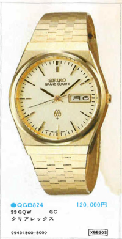
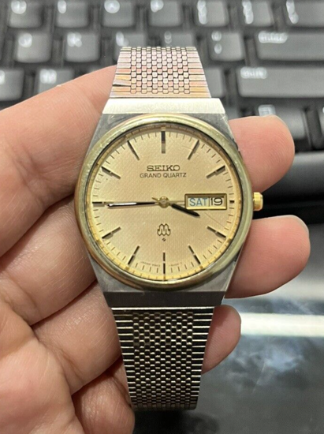

I bought a watch in 2023: the Seiko Grand Quartz 9943-8000. I had become so enamored with it after reading this blog post (which I
highly recommend reading). To quickly summarise, I love this watch because of:
its highly accurate twin quartz movement
the history of said movement, which was groundbreaking engineering at the time, and
its good looks!

A Seiko catalogue picture of my 9943-8000 from 1978. ¥120,000!
The watch is even considered a part of Grand Seiko's own history in Vol.4 of "A history of Grand Seiko in ten chapters."A screenshot of the 9943 from Grand Seiko's "A history of Grand Seiko in ten chapters"
I found my watch on eBay in March. I had been combing listings try to find a good price; you could either pay a lot—upwards of $1000 AUD—for something in mint or slightly mint condition, or pay as little as $200-$500 AUD in an auction for something very much used or aged. We are talking about something more than 40 years old, so the used instances were not always in the best condition.
Eventually I settled on someone selling a watch from Sydney. It mostly looked good, but I have to admit, I may have been a bit
too excited to get one after having looked for so long.

My watches original eBay listing
The band wasn't the original, but other than some wear and tear, it looked good. The patina looked great in my opinion. I did confirm the colour of the watch was two-toned (mistake #1).